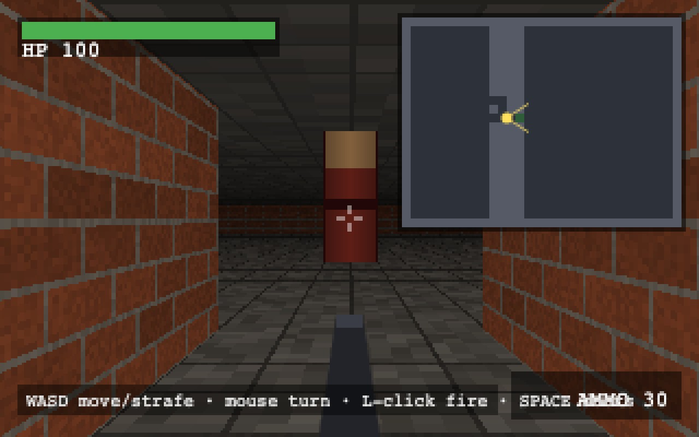

24 November 2026 · Agentic task loop · first-person raycaster
Raycaster Shooter · Inkling 2 Mini · Splash 1.7.2 · UD-Q8_K_XL · Tenaz main + Pi · thinking low
Tenaz ended COMPLETE after 29 min, 26 sessions and 10 tasks, every task accepted on its first attempt and the first final review ACCEPT. Played: both rooms can be reached through the one door, which shows planks, opens with Space and is no longer drawn once open; the one enemy, a plain red rectangle, walks up to the player and dies to shots after it arrives, but never damages the player. The game draws its 320x200 canvas at that size in the middle of the page instead of scaling it to fill the window, a brief requirement (R10) the final review marked met. The user found it more playable and better looking than the UD-Q4_K_M thinking-low run, apart from its small size.

What was checked
- Runner final state COMPLETE on 24 November 19:41:06.744 UTC: 10 tasks done, none pending. Bootstrap passed its three steps first time (18 requirements, none manual; 10 tasks). Every task passed verify and review on its first attempt (10 of 10 ACCEPT). Two replans added nothing. Final review cycle 1 returned ACCEPT with verify passing and all 18 requirements covered.
- Runner events: 26 sessions, none stopped or failed; no watchdog actions, reverts, context compactions, provider errors, capacity limits or engine retries. No reply stopped at the output limit: the stop reasons are 217 tool use and 26 stop, and the largest reply is 7,650 tokens of the 16,384 allowed.
- Configuration: Pi 1.6.0 over RPC with the openai-completions provider splash, thinking low, text input only, a 131,072-token context window and max_tokens 16,384; Tenaz main 3f43405 with defaults, temperature 1.0, generic engine, sandbox off. The preflight reported reasoning, cache and tools true and vision not tested. Against the UD-Q4_K_M thinking-low run only the quantization changed.
- `verify --all` on a clean clone of the final commit c7d56e1 with the run's node_modules and its project-local Playwright browsers (.tenaz/private, which git ignores): 12 of 12 passed (T000.tools to T010.docs), as Tenaz recorded. Without the browsers T009.shots fails. Model-written checks that test state and math, not playability.
- Brief requirement not met: the brief asks for an internal resolution of at least 320x200 'scaled to fill the window with crisp pixels'. index.html gives the canvas width 320 and height 200 and only image-rendering: pixelated in CSS, with no CSS size, so the browser draws it at 320x200 CSS pixels in the middle of a dark page (at 1280x720 its box is 320 by 200). The model wrote this as R10; the T001 reviewer noted the missing scaling as minor and left it to R10, and the final review marked R10 met, 'scaled in index.html (T005)', which it is not. The user, playing it, asked why it was so small.
- Played by Claude with Playwright in Chromium's new headless mode, holding keys, against the build served from the run's dist. Map: 32 by 24 cells, two large rooms (west stone floor 9 cells wide, east brick floor 17 wide, 22 rows each) joined by a short corridor and one door at (13,11); spawn (9.5,11.5) facing east, 3.5 cells from the door. Both rooms can be reached; nothing is sealed. The door shows a plank texture, Space opens it, and once open it is not drawn (raycaster.js walks through open doors). The one enemy, at (22.5,11.5), is drawn as a plain red rectangle; it walked up to the player, and 8 clicks later (ammo 30 to 22) it was gone. Health stayed 100 throughout: no code lowers it. W/S move, A/D strafe and Q/E turn by keyboard. In the HUD, the end of the controls hint ('SPACE doors') runs under the AMMO readout.
- Mouse look: the game listens for pointerlockchange and mousemove on document (the thinking-low UD-Q4_K_M game listened on window, which never fired in Chromium). Not tested: headless Chromium gives no pointer lock, and the user did not report on it.
- Played by the user in their own browser: more playable, better detail and better looking than the UD-Q4_K_M thinking-low game, but they did not know why it was so small (the canvas size above).
- Engine metrics: one Splash process wrote 247 Done summaries. The first 4 belong to this run's preflight; all 243 proxy records match the remaining 243 one-to-one, in order and uniquely by (prompt, output, cached), ending at the last summary in the log. For all 26 sessions the matched summaries' fresh input, cached and output tokens equal the usage Tenaz journaled. TTFT comes from Splash's 'TTFT of request' lines. The download start's log has no requests.
- Memory: Tenaz's 110 host samples at 30 s report memory pressure normal throughout. Wired memory went from 24.2 GiB at the first sample to a maximum of 43.6 GiB, and free memory fell to 0.13 GiB at its lowest. Swap use stayed at 13.2 GiB, already in use before the run. Tenaz sampled Splash's Python parent (0.22 to 0.46 GiB), not its engine, so no engine footprint is recorded.
- Public artifact: `vite build --base ./` of the final commit c7d56e1 in the clean clone (the project's own vite config already sets base './'); its index.html and JavaScript bundle are byte-identical to the run's own dist. Plain canvas code with no URLs in the bundle; it made no request outside its folder and logged no page errors in a headless replay. Screenshot: the canvas from that replay about 1.5 s after opening the door, enlarged four times with nearest-neighbour to 1280x800; the page itself shows it at 320x200.
Limits of this evidence
Completion is the runner outcome. Inkling 2 Mini, a looped mixture of experts, as Unsloth's UD-Q8_K_XL GGUF on Splash 1.7.2 with the DFlash2 drafter at a 128K context, Pi thinking low and text only, on the Raycaster brief. It repeats the UD-Q4_K_M thinking-low run with only the quantization changed: the same Tenaz build, Pi version, thinking, temperature, window, budget and brief. Both took about half an hour; this one decoded more slowly (median 71.6 against 87.1 tok/s) and built a more playable game. With one run each at temperature 1.0, that suggests but does not prove that the 4-bit quantization cost quality. The playthroughs were by Claude in headless Chromium and by the user, who found it more playable and better looking but too small.
Configuration
The model, serving engine and agent used for this execution.
| Field | Value | Detail |
|---|---|---|
| Model · primary | Inkling 2 Mini · primary · reasoning low (Pi thinking level low; Splash started with --default-reasoning-effort low). Splash logged every request as 'effort low · thinking off', yet the replies carried reasoning: Pi counted 36,009 reasoning tokens. The model card says the lowest effort does not fully disable reasoning. | Unsloth Dynamic UD-Q8_K_XL GGUF (Inkling-2-Mini-UD-Q8_K_XL.gguf, 22,867,452,896 bytes, sha256 2da51788d43a17e1f033bec420fa83ba9cb87ac1f0130dc9135a4d2ed2678b68), downloaded for this run. It is the quantization the card measures the others against; the thinking-low run used UD-Q4_K_M (16.61 GB, mean KL divergence 0.0108 against this one). |
| Checkpoint · primary | unsloth/Inkling-2-Mini-GGUF:UD-Q8_K_XL | primary model artifact · revision 8078d149286eec7193795413b9e0643da6d11fa1 |
| Model · drafter | Inkling 2 Mini DFlash2 · drafter | — |
| Checkpoint · drafter | incoai/Inkling-2-Mini-DFlash2 | drafter model artifact · revision 4f9088ea66c21f2b99ed657d1941c306b03e84d2 |
| Runtime | Splash 1.7.2 · Homebrew formula splash 1.7.2; the engine start script wrote `splash --version` (Splash 1.7.2) before starting it · One splash serve process, started for this run at 19:11:37 UTC and running until after COMPLETE; registered with Tenaz as a generic engine with start and stop scripts and reached through Tenaz's proxy. --model unsloth/Inkling-2-Mini-GGUF:UD-Q8_K_XL --offline --no-webui --max-context 128K --default-reasoning-effort low --idle-release off; installed from the Hugging Face cache at the target and drafter revisions above, vision disabled. Startup log: 'Ready · context 128K · text only', SSD prefix cache up to 13.7 GiB, routed experts held in memory (15,553 MiB), --verify-rows auto; no Neural Engine line. Just before, a first Splash start without --offline downloaded the 22.87 GB file (15 min 13 s), reached Ready and was stopped with no requests; its log is kept apart and nothing from it is counted. Temperature 1.0 pinned through Tenaz's proxy; top-p and top-k left to Splash, whose Inkling defaults are 1.0 and 0. Pi's max_tokens 16,384 (fixed in this Tenaz build). mode | inference engine and exact build |
| Harness | Pi coding agent over RPC driven by Tenaz main 3f43405 (it reports 0.8.0 (3f43405)) 1.6.0 | the agent or client that drove the run |
| Runner | Tenaz main · build 3f43405 after 0.8.0 (unreleased) | open-source runner, github.com/aartiles/tenaz · how the runner evolved |
| Hardware | Apple MacBook Pro · 64 GB unified memory | hardware recorded for this execution |
| Workload | Raycaster Shooter · revision 1 | One-shot raycaster brief by @ddalcu, as posted by @Beamsters1, used verbatim as the Tenaz brief (sha256 5c3cf17c..., the same file as the UD-Q4_K_M Splash runs, the Inkling 2 Mini mlx-serve run and the Qwen 3.8 27B pi-adapted Raycaster runs); the local model wrote its own spec, verify and task plan. Per-session context budget 85,196 tokens (0.65 of 131,072). Text only: builders and reviewers could not look at screenshots. No operator action after launch. |
| Context window | 131,072 tokens | maximum context configured for the serving runtime |
| Repetitions | 1 | executions recorded for this workload; one means an indicative result, not an estimate |
Inference measurements
Engine-side rates for this run. Each figure states its own statistic; figures from different runs are not interchangeable.
| Metric | Value | Definition |
|---|---|---|
| TTFT · median | 0.260284 s | Median engine-reported TTFT ('TTFT of request' lines, millisecond precision) across matched requests. · n=243 · 90th percentile 1.77 s, mean 0.699 s, maximum 15.3 s; 1 requests over 10 s. Includes the run's cache mix; not a prefill rate. |
| Decode · per-request median | 71.6 tok/s | Median of Splash's per-request decode rate across matched requests. · n=243 · 10th percentile 52.6, 90th percentile 97.2 (linear interpolation). Median 72.2 below 16K prompt tokens (167 requests), 70.5 from 16K to 32K (68), 77.3 from 32K up (8). |
| Decode · output-weighted | 67.5249 tok/s | Total output tokens divided by the sum of each request's output tokens over its decode rate. · n=243 |
| Tokens per decode cycle · drafter | 4.143 tokens/cycle | Output-token-weighted mean of Splash's tokens per decode cycle with the DFlash2 drafter (median 4.2). · n=243 · Splash logs tokens per cycle, not drafted and accepted counts, so this is not an acceptance percentage. |
| Host wired memory · median | 33.23 GiB | Median host wired memory across Tenaz's 30-second samples from start to end of the run. · n=110 · 24.2 GiB at the first sample, maximum 43.58 GiB. Host-wide, includes every process. |
| Swapped in during the run | 0.006 GiB | Swap-in pages summed over Tenaz's memory samples (400 pages of 16 KiB); host-wide swap I/O, not resident memory. · n=110 · Memory pressure normal in every sample. |
Agent session counters
Agent-wide usage totals. These include reasoning, tool calls and waiting, and are not model decode speed.
| Metric | Value | Definition |
|---|---|---|
| Run elapsed | 29.3 min | Session 001 start after the preflight (24 November 19:11:49.148 UTC) to COMPLETE (19:41:06.744 UTC); includes tools, checks and reviews. · n=1 · 29 min 17.6 s; no pauses. |
| Agent sessions | 26 sessions | All harness sessions: 3 bootstrap, 10 builder, 10 reviewer, 2 replan and 1 final reviewer. · n=1 |
| Sessions ended early | 0 sessions | Sessions with ok=false. · n=26 |
| Operator interventions | 0 actions | No pauses, relaunches, configuration changes or edits after the first session started. · n=1 |
| Model responses | 243 responses | All proxy request records of this run; none ended in error. · n=1 |
| Matched model requests | 243 requests | Proxy records matched one-to-one, in order and uniquely to Splash Done summaries by (prompt, output, cached). · n=243 · 4 earlier summaries, from this run's preflight, unassigned and excluded. |
| Tool calls | 224 calls | Sum of harness tool_calls across all 26 session records. · n=26 |
| Context compactions | 0 compactions | Compaction count across all session records. · n=26 |
| Responses stopped at the output limit | 0 responses | Proxy records that stopped at the 16,384-token output limit. · n=243 · Largest reply 7,650 tokens. |
Context and token counters
Token totals as reported by the harness or engine. Cached and cumulative figures are not additive with fresh input.
| Metric | Value | Definition |
|---|---|---|
| Maximum prompt context | 35,533 tokens | Largest prompt across matched requests; not the configured server window. · n=243 · Tenaz's per-session context peak, which adds the reply, reached 35,833 tokens of the 85,196 budget, in 015-builder-T006. |
| Cumulative input | 3,739,381 tokens | Sum of total prompt tokens across matched requests, including repeatedly reused context; not unique input. · n=243 |
| Cached input | 3,524,960 tokens | Sum of prompt tokens Splash reported cached across matched requests. · n=243 |
| Fresh input | 214,421 tokens | Total prompt minus cached prompt tokens across matched requests. · n=243 |
| Output tokens | 98,659 tokens | Sum of output tokens across matched requests, reasoning included. · n=243 |
| of which reasoning output | 36,009 tokens | Reasoning tokens in Pi's usage, summed over the 26 journaled sessions. · n=26 · 36.5% of the output. |
| Prompt-cache token share | 94.2659 % | Cached prompt tokens divided by total prompt tokens, weighted by tokens across matched requests. · n=243 |
Recorded check counters
Counts from the checks recorded with this run.
| Metric | Value | Definition |
|---|---|---|
| Tasks completed | 10 tasks | Final task cards marked done; none active, todo or blocked. · n=10 |
| Reviews returning changes | 0 reviews | Task review verdicts returning CHANGES; all 10 task reviews and the single final review returned ACCEPT. · n=10 |
| Project checks passing | 12 checks | Checks passing in `verify --all` on a clean clone of the final commit, rerun after the run. · n=12 · Model-written checks, not an independent acceptance suite. |
Request records & provenance
243 numeric request records in proxy order, each matched one-to-one to a Splash Done summary by total prompt, output and cached tokens. TTFT comes from Splash's 'TTFT of request' lines and decode from its Done lines. The preflight's summaries are excluded. No prompts, tool results, session identifiers or local paths are included.
Run ID: 2026-11-24-inkling-2-mini-udq8kxl-splash-v172-thinking-low-tenaz-main-3f43405-pi-raycaster-shooter
One execution, with checks transcribed from the retained record. A completed session is not a quality score. Measurement method · All runs